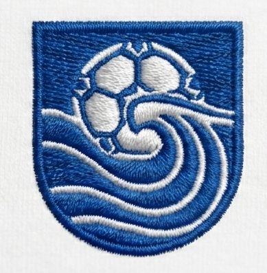

Welcome to Fair Haven Rec Soccer
Providing a structured, fun, and development-driven soccer experience for the youth of Fair Haven, New Jersey. Our recreational league focuses on teaching fundamentals, instilling sportsmanship, and cultivating a lifelong passion for the game.
Register For Fall 2026
Our Mission:
Our mission is to provide a community based soccer program that is safe, enjoyable, and competitive while supporting player development, and fostering a sense of belonging. Our soccer program is entirely supported by a community of volunteers which give their time and effort to ensure our children have an opportunity to participate, learn, develop, and enjoy the game of soccer.
Our mission is to provide a community based soccer program that is safe, enjoyable, and competitive while supporting player development, and fostering a sense of belonging. Our soccer program is entirely supported by a community of volunteers which give their time and effort to ensure our children have an opportunity to participate, learn, develop, and enjoy the game of soccer.
Fall 2026 Update: Online registration for the upcoming Fall Rec Soccer Season opens on June 15th! Be sure to sign up before the regular deadline on August 2nd. Please note that space on teams is not guaranteed for registrations after August 2nd.
Program Structure At A Glance
Grades K - 2nd
Focused on fundamental motor skills and fun gameplay. Players in Kindergarten through 2nd grade will have one combined game/practice session each Saturday during the season.
Grades 3rd - 8th
Expanded technical match play framework. Players in 3rd through 8th grade will have scheduled league matches on Saturdays, as well as one designated practice session each week.